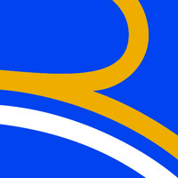

WealthWise
Aplicación web para gestión inteligente de finanzas personales. Controla gastos, administra deudas y optimiza tu presupuesto de forma sencilla.
Ver Mas
Soy un Desarrollador Full Stack titulado en Duoc UC, con experiencia en Python, Node.js, Angular, React y GCP. Me motiva la innovación y el trabajo en equipo para crear soluciones eficientes y escalables.

Desarrollé un portal de gestión de solicitudes de teletrabajo, integrado con diversas plataformas para almacenar y sincronizar la información en la base de datos. La aplicación, construida con Node.js y Angular, cuenta con múltiples módulos y un apartado dedicado a la descarga de reportes.
Participé en el desarrollo de un MVP de entrevistas con IA, integrando Spring Boot, Python y React, además de la conexión con TeamTailor (ATS) para automatizar el flujo de entrevistas mediante un avatar inteligente, mejorando la eficiencia y experiencia del reclutamiento. También contribuí al desarrollo de un portal de gestión de personas en Google Cloud Platform (GCP), utilizando servicios como Cloud Functions, App Engine, Flask, MongoDB, Kafka, Cloud Run y Máquinas virtuales, garantizando escalabilidad y alto rendimiento. Adicionalmente, diseñé asistentes virtuales con IA capaces de procesar datos empresariales estructurados y desarrollé un convertidor inteligente de CVs, que adapta documentos a formatos corporativos de manera automática, optimizando procesos internos y de selección.
Diseñé e implementé una aplicación web para la automatización de reportes, capaz de consultar grandes volúmenes de datos en BigQuery y generar informes de forma eficiente y precisa. Integré los resultados en plantillas personalizadas, optimizando el proceso de generación y entrega de reportes. Además, desarrollé y desplegué toda la infraestructura en Google Cloud Platform (GCP), garantizando alto rendimiento, disponibilidad y escalabilidad del sistema.
Desarrollé y modernicé plataformas web con PHP y WordPress, implementando interfaces optimizadas y múltiples CRUD para mejorar la usabilidad. Diseñé un nuevo portal integrado para administradores y clientes, fortaleciendo la conexión con los sistemas internos de la empresa. Brindé soporte continuo y mantenimiento, asegurando el correcto funcionamiento y la evolución constante de las aplicaciones.
Desarrollo y mantenimiento con Joomla y PHP, integración de VirtueMart para e-commerce y optimización del catálogo con mejor presentación de productos.
Aplicación web para gestión inteligente de finanzas personales. Controla gastos, administra deudas y optimiza tu presupuesto de forma sencilla.
Aplicación web para gestión inteligente de finanzas personales. Controla gastos, administra deudas y optimiza tu presupuesto de forma sencilla.
Aplicación web para gestión inteligente de finanzas personales. Controla gastos, administra deudas y optimiza tu presupuesto de forma sencilla.
Script en Python para automatizar tareas en Windows: instalar programas, descargar repositorios, ver contraseña Wi-Fi y optimizar servicios, con interfaz animada en consola.
App web de entrenamiento con calendario: registra ejercicios diarios y peso mensual, hace auto-guardado en GitHub (token), permite backup/recarga y ofrece UI responsive con modales.
App web de entrenamiento con calendario: registra ejercicios diarios y peso mensual, hace auto-guardado en GitHub (token), permite backup/recarga y ofrece UI responsive con modales.
Siempre abierto a nuevas oportunidades, colaboraciones sobre tecnología y diseño.
Ro.aravenac@gmail.com